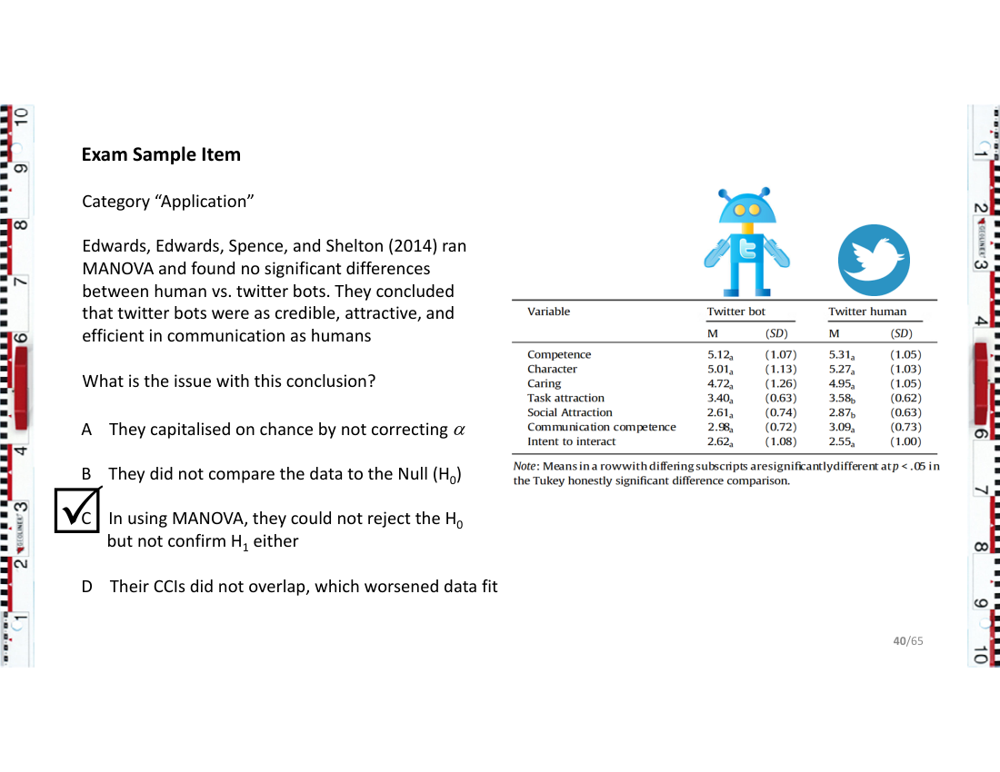

EXAM / L11
L11 · 逐题复习（3 组） 解析默认收起，可先选答案再展开核对，作答与错题自动保存。
L11-E01 · Application · 选择题 与别人比，还是与过去的自己比？ 11 Σ SD5979 Bayesian statistics 2026 11 11.pdf 第 5 页 · 点图放大
题干中文译文 1) 我不比任何人更好
我的作答 ☆ 加入错题本
查看老师答案与逐项解析 ▾ 问 1 第 1 问：A、B 错在 paired；C 错在 Hₐ；D 是老师答案。
第 1 问：A、B 错在 paired；C 错在 Hₐ；D 是老师答案。
问 2 第 2 问：A 是老师答案；B 错在 H₀；C、D 错在 independent。
第 2 问：A 是老师答案；B 错在 H₀；C、D 错在 independent。
问 3 先拆两条轴：无差异/有改善 → H₀/Hₐ；不同人/同一人前后 → independent/paired。
先拆两条轴：无差异/有改善 → H₀/Hₐ；不同人/同一人前后 → independent/paired。
问 4 条件检查
老师答案页还追问测量水平以及能否用 t-test，不要漏看。
这些选项的概念，课件正文是否出现过？ 检索全部 903 页（排除题目、答案页与参考文献页）。
independent samples 正文原词命中 6 页
老师原答案与延续页 11 Σ SD5979 Bayesian statistics 2026 11 11.pdf 第 6 页 · 点图放大
L11-E02 · Application · 选择题 不显著，能说一样好吗？ 11 Σ SD5979 Bayesian statistics 2026 11 11.pdf 第 39 页 · 点图放大
题干中文译文 考试样题
我的作答 A B C D ☆ 加入错题本
查看老师答案与逐项解析 ▾ B 方法理解错误
MANOVA 的这项检验本来就在处理零假设。
C 正确
未拒绝 H₀，不能据此证明人和 bot 同样可信、有吸引力、高效。
D 概念错位
CCI 不是题中 MANOVA 结论的已给证据；老师另将其列为旁支。
这些选项的概念，课件正文是否出现过？ 检索全部 903 页（排除题目、答案页与参考文献页）。
老师原答案与延续页 
11 Σ SD5979 Bayesian statistics 2026 11 11.pdf 第 40 页 · 点图放大
L11-E03 · Insight · 开放题 56% 与决策不确定性 11 Σ SD5979 Bayesian statistics 2026 11 11.pdf 第 57 页 · 点图放大
题干中文译文 假设用朴素贝叶斯估计，用户仅依据眼睛就认定一个机器人是仿人的概率为 56%：P(Humanoid|eyes) = 0.56
我的作答 ☆ 加入错题本
查看老师答案与逐项解析 ▾ 56% 意味着什么？ 56% 接近 50–50 的最大不确定位置，因此“Humanoid”的决定仍很可疑；不能把 56% 直接说成很有把握。
两个端点作对比 P = 0% 或 100% 时，老师图中不确定性为零。
老师原答案与延续页 11 Σ SD5979 Bayesian statistics 2026 11 11.pdf 第 58 页 · 点图放大